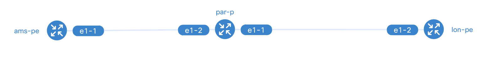

Bootstrapping the environment
Here is how you can run the orchestrator-core, orchestrator-ui, and netbox with Docker Compose. We have this all setup in our docker-compose.yml file so that you don't have to think about how to start the applications required for this workshop! If you want to read more about how to manually install the Workflow Orchestrator, please refer to the beginner workshop here. The following Docker images are used in this workshop:
- orchestrator-core: The workflow orchestrator step engine.
- orchestrator-ui: The GUI for the orchestrator-core.
- netbox: A free IPAM and SoT system.
- postgres: The PostgreSQL object-relational database system.
- redis: An open source, in-memory data store used by netbox
- Optional: containerlab: A free network topology simulator that uses containerized network operating systems.
Danger
To run the workshop with container lab, the host architecture must be x86_64 with virtualization enabled
Step 1 - Cloning the repo
The fist step is to clone the Example orchestrator repository using:
git clone https://github.com/workfloworchestrator/example-orchestrator.git
- The orchestrator (core and GUI)
- Netbox (the entire stack including database, workers, etc...)
- LSO (to run ansible playbooks)
- An example containerlab topology based on Nokia SRlinux.
- Some examples of Ansible playbooks
The directory structure looks like this:
~/example-orchestrator# ls -la
total 144
drwxr-xr-x 14 root root 4096 May 10 10:29 .
drwx------ 16 root root 4096 May 15 06:42 ..
-rw-r--r-- 1 root root 147 May 8 10:35 .env.example
drwxr-xr-x 8 root root 4096 May 15 10:15 .git
-rw-r--r-- 1 root root 82 May 8 10:56 .gitignore
drwxr-xr-x 2 root root 4096 May 8 10:35 .pictures
-rw-r--r-- 1 root root 50000 May 8 10:56 README.md
-rw-r--r-- 1 root root 884 May 8 10:35 alembic.ini
drwxr-xr-x 4 root root 4096 May 9 19:42 ansible <<<< Ansible playbooks
drwxr-xr-x 3 root root 4096 May 15 10:16 clab <<<< Containerlab topology
drwxr-xr-x 9 root root 4096 May 8 10:56 docker <<<< Docker folder for config etc..
-rw-r--r-- 1 root root 4469 May 10 10:29 docker-compose.yml <<<< The docker compoose file to spin up orchestrator stack
-rw-r--r-- 1 root root 920 May 8 10:35 main.py
drwxr-xr-x 3 root root 4096 May 8 10:35 migrations
drwxr-xr-x 5 root root 4096 May 8 10:56 products
-rw-r--r-- 1 root root 100 May 8 10:35 pyproject.toml
-rw-r--r-- 1 root root 41 May 8 10:35 requirements.txt
drwxr-xr-x 2 root root 4096 May 10 10:46 services
-rw-r--r-- 1 root root 942 May 8 10:35 settings.py
drwxr-xr-x 2 root root 4096 May 8 10:35 templates
drwxr-xr-x 2 root root 4096 May 8 10:35 translations
drwxr-xr-x 2 root root 4096 May 8 10:35 utils
drwxr-xr-x 7 root root 4096 May 8 10:56 workflows
Step 2 - Editing the environment
Before starting up the stacks, we have to check the file:
docker/orchestrator-ui/orchestrator-ui.env
and adjust the LISTENING_IP value:
ENVIRONMENT_NAME="Example Orchestrator"
ORCHESTRATOR_API_HOST=http://<$LISTENING_IP>:8080
ORCHESTRATOR_API_PATH=/api
ORCHESTRATOR_GRAPHQL_HOST=http://<$LISTENING_IP>:8080
ORCHESTRATOR_GRAPHQL_PATH=/api/graphql
NEXTAUTH_SECRET=ToDo
Step 3 - Starting the environment
Once you edited the file, you can start the docker environment with:
Remote lab environment with LSO and Containerlab
COMPOSE_PROFILES=lso docker compose up
Local environment
The environment requires several ports to be free. Use either command below to check if any are in use. No output means they're available:
netstat -tulnp | grep -E ':80|:3000|:4000|:5432|:5678|:8000|:8001|:8080'
ss -tulnp|grep -E ':80|:3000|:4000|:5432|:5678|:8000|:8001|:8080'
Start the containers:
docker compose up -d
and you should be able to view the applications here:
If you are using your laptop:
- Orchestrator ui: Frontend: http://localhost:3000
- Orchestrator backend: REST api: http://localhost:8080/api/redoc and
Graphql API: http://localbost:8080/api/graphql - Netbox (admin|admin): Netbox: http://localhost:8000
If you are using a remote machine:
- Orchestrator ui: Frontend: http://<$IP_ADDRESS_OF_THE_MACHINE>:3000
- Orchestrator backend: REST api: http://<$IP_ADDRESS_OF_THE_MACHINE>:8080/api/redoc Graphql API: http://<$IP_ADDRESS_OF_THE_MACHINE>:8080/api/graphql
- Netbox (admin|admin): Netbox: http://<$IP_ADDRESS_OF_THE_MACHINE>:8000
Note
Take your time to familiarise with the applications and make sure they are working correctly. You can then continue with the following steps.
Optional: Step 4 Containerlab
Now that we have our orchestrator stack running, we can spin up the containerlab topology:
cd clab
containerlab deploy
containerlab inspect to check the status of our topology:
~/example-orchestrator/clab# containerlab inspect
INFO[0000] Parsing & checking topology file: srlinux01.clab.yaml
+---+-----------------------+--------------+-----------------------+------+---------+----------------+--------------+
| # | Name | Container ID | Image | Kind | State | IPv4 Address | IPv6 Address |
+---+-----------------------+--------------+-----------------------+------+---------+----------------+--------------+
| 1 | clab-orch-demo-ams-pe | 46ddee7df745 | ghcr.io/nokia/srlinux | srl | running | 172.22.0.11/16 | N/A |
| 2 | clab-orch-demo-lon-pe | fe3f5d6eb35e | ghcr.io/nokia/srlinux | srl | running | 172.22.0.10/16 | N/A |
| 3 | clab-orch-demo-par-p | 4831968e075c | ghcr.io/nokia/srlinux | srl | running | 172.22.0.9/16 | N/A |
+---+-----------------------+--------------+-----------------------+------+---------+----------------+--------------+
And with the command:
containerlab graph
The topology we are going to use is something like this one:

The Example orchestrator used in this workshop already has a number of products pre-configured and ready to be used:
- Nodes (including Ansible to deploy example config)
- Core-links (including Ansible to deploy/delete example config)
- Ports
- L2VPN
We can start feeding initial data into the environment and run some workflows!
Helpful Items
Resetting Your Environment
To reset the active state of your environment back to scratch, simply use docker compose to delete volumes, like so:
jlpicard@ncc-1701-d:~$ docker compose down -v
You can then restart the containers as described above.